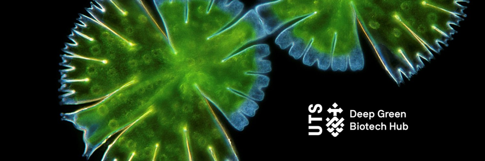

Professors Peter Ralph is a distinguished academic and research leader in the fields of algae bio-systems and biotechnology, seagrasses, and the adaption of aquatic plants to warming and acidifying oceans. He is Executive Director of the Climate Change Cluster at University of Technology Sydney and founder of the NSW Deep Green Biotech Hub.
The New South Wales Deep Green Biotech Hub brings together researchers, SMEs, industry, start-ups, students and other stakeholders to bring NSW to the forefront of algae-based biotechnology innovation in Australia.
In this edited conversation with Peter Green, Peter Ralph spoke about Deep Green Biotech Hub and future perspectives on the seaweed industry.

Why did you create Deep Green Biotech Hub
It was an opportunity to fast-track innovation. I've seen around the globe that moving green technology into industry start-ups and SME's has a big barrier in the shape of technology. Progress is slow because start-ups have to buy a lot of kit, invest and know that their efforts will work out.
I realised that the university was well placed to help because they have a lot of that infrastructure. It was a matter of creating a hub that would bring together the innovators, the entrepreneurs, the SMEs, the students and the technology without imposing on intellectual property (IP). So, with Deep Tech Biotech Hub the IP does not belong to the university. The IP belongs to the start-ups. We have to be able to differentiate research contract from supporting innovative new start-ups.
It's called Deep Green Biotech Hub for a reason, not just the "Green Biotech Hub". A Deep Tech Hub is a hub that has kit and infrastructure, not just smarts and intellect.
What have been some of the biggest challenges you’ve encountered with the hub?
Over four years the hub has attracted and grown the algal industries in New South Wales and also influenced the rest of Australia.
The challenge is ensuring its continuity. The government has funded it for the past four years, and we look forward to ongoing funding. Understanding which groups are able to support it is an important part of the organisation. For example, we have also had support from some philanthropic groups with banking organizations.
Keeping the funding is a part of the process, but beyond that, the fantastic people that want to work in the hub keep the challenges at bay. It's a unique opportunity for founders to debate with a bunch of seaweed and algae nerds.

Have you noticed any trends in the start-ups coming out of the hub?
To be honest, the start-ups come into the hub with a lot more commonality than when they leave. For example, currently there's more interest in macroalgae than microalgae which I think is linked to current knowledge or awareness in the general public. I think there's a slow shift in focus at the moment toward microalgae.
At Deep Green Biotech Hub , we've seen all kinds of different interests in macro and microalgae. This includes a flurry of food and fashion groups coming through. When the groups leave, they're ready to continue their journey. They're well-versed in getting their MVP's developed, they’ve learned about pitches, and learned about their market.
Where do you see the trend of seaweed in industry going in the next 5-10 years?
Definitely to microalgae, but currently it's dominated by macroalgae. Industry will demand the greater diversity of products that can come from microalgae. Macroalgae has a certain range of compounds that can be exploited which are not completely exploited yet. However, they will be quite quickly and I think microalgae offer an immensely larger biochemical larder to choose from. There will be an evolution.
How do philanthropic investments and VC/angel investments compare?
Investors are looking for products. They're looking for reasons why macro or microalgae could deliver a product that they're interested in. On the other hand, philanthropy appears to be moving very rapidly towards the space of decarbonisation and sustainable, circular economies.
That's a different kind of market and there's increasing interest in that space. I think they are going in different directions because one is driven by “what can the algae give me” as opposed to "what service can the algae provide to the planet, to society, to my country?"
What has motivated you to pursue continued research in seagrasses and algae?
I did my PhD in seagrasses 30 years ago. I've always maintained an interest and activity in that space and there's a lot of opportunities for blue carbon in the seagrass world. I've spent the last 10 years working on blue carbon but I made an active decision that microalgae and macroalgae were vehicles which could have a greater influence on sustainable practices in society than seagrasses. Seagrasses have to be protected and they certainly will be, but active processes to decarbonise the atmosphere are not going to immediately be delivered by sea grass and blue carbon habitats. We can't scale them up quickly enough and we can't grow them quickly enough.

What’s next for you and the team at Deep Green Biotech Hub?
Next is continuing to grow the industry and to identify more opportunities. We’re looking forward to the next rounds of Green Light, an accelerator program dedicated to supporting the development of algae biotech solutions. Each time we offer Green Light, there's a broader and more exciting cohort of people that hear about it and I hope there's people in the wings that are preparing their ideas.
What advice would you give to your younger self?
Be bold and start quickly because the clock's ticking and the solutions are out there. Society needs to see what's possible.
Are there any books you might recommend to others involved in entrepreneurship in this space?
I’ve read a lot of Simon Sinek’s books. They’re the ones which have given me a lot of insights into leadership and how to influence. In a lot of ways, by running an institute I'm running a business and I need to have the same leadership skills as somebody working in industry. I can't just think of myself as an academic.
Another book that is very influential is Ross Garnaut’s Superpower. That's a book about energy systems. One of the biggest problems with algae and the bioeconomy is energy. If we can link sustainable energy sources to microalgae we're going to solve the problem because 40% of the cost of any algal product is harvesting and electricity. So if we can get sustainable sources of electricity that are not fossil-based, we can transform this industry.